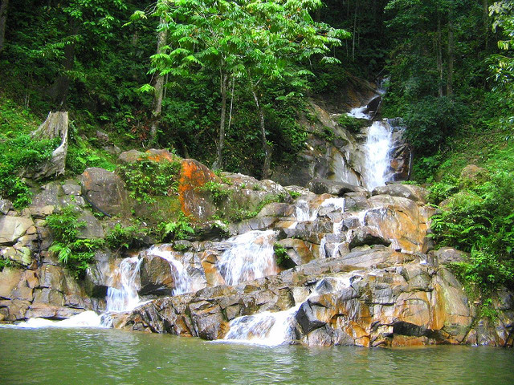
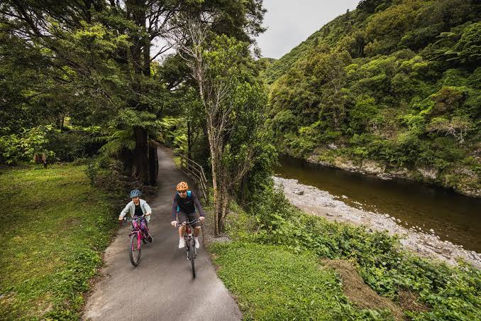
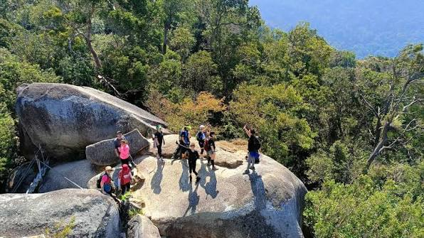
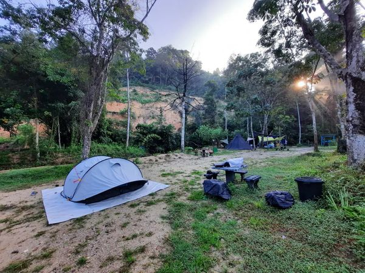
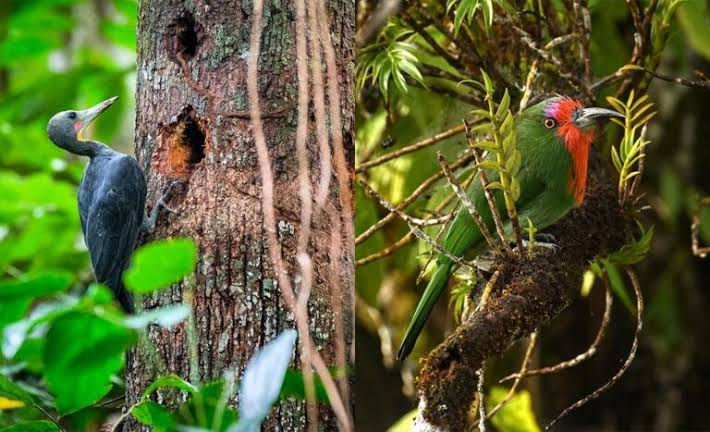

People, Heritage, Nature & Local Experiences
Feel the refreshing beauty of Rembau's waterfalls.
Explore peaceful rivers surrounded by nature.
Ride through scenic countryside and forest trails.
Experience jungle trekking and outdoor adventures.

Rembau is blessed with breathtaking waterfalls and peaceful rivers surrounded by lush tropical rainforest. These natural attractions offer a perfect escape for visitors seeking relaxation and outdoor adventure.
Cycling in Rembau offers a unique way to explore beautiful villages, green paddy fields, rubber plantations, and peaceful countryside. Riders can enjoy fresh air while discovering the local lifestyle and scenic landscapes.
15 - 40 km Routes
Easy to Moderate

Experience the beauty of Rembau's tropical forests through exciting outdoor activities suitable for families, students, and adventure lovers.

Discover hidden trails while enjoying the fresh forest air and beautiful scenery.

Spend quality time with family and friends surrounded by nature.

Observe colourful birds and wildlife living in the rainforest.